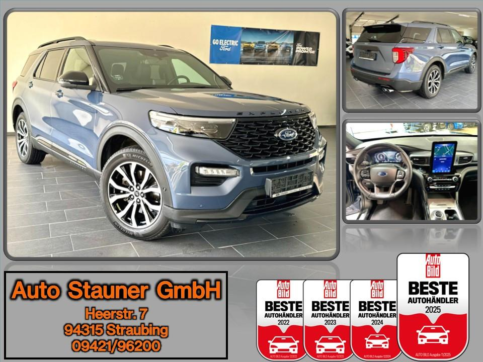
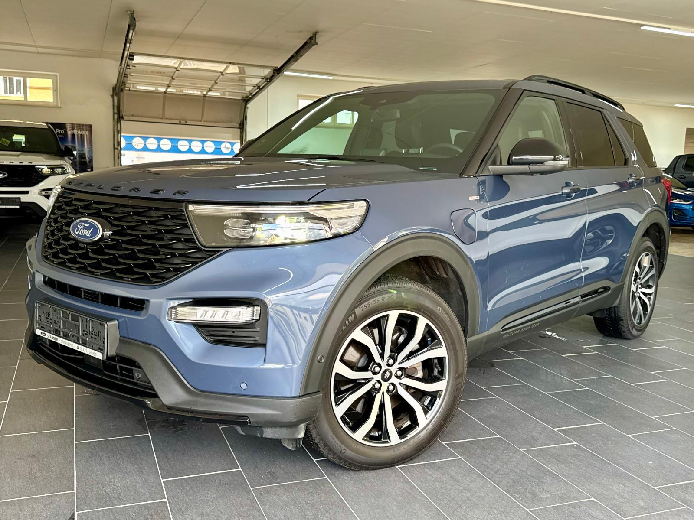
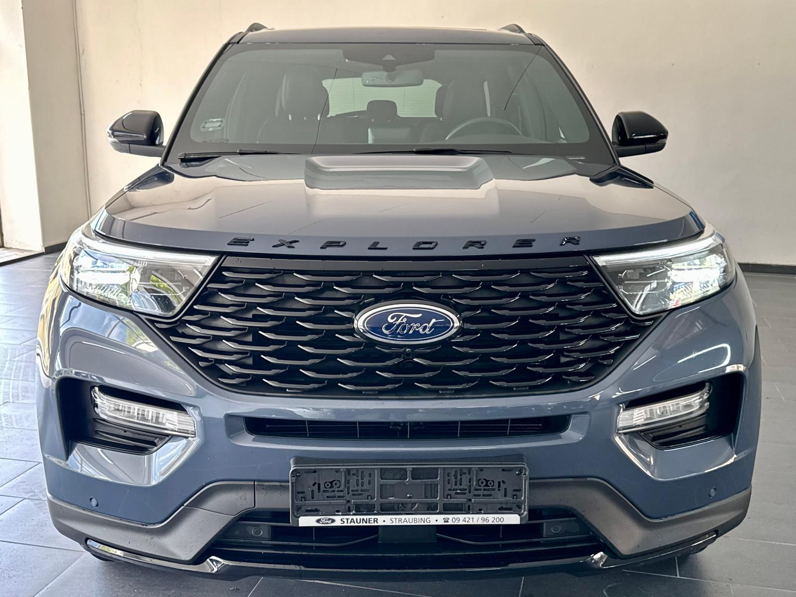
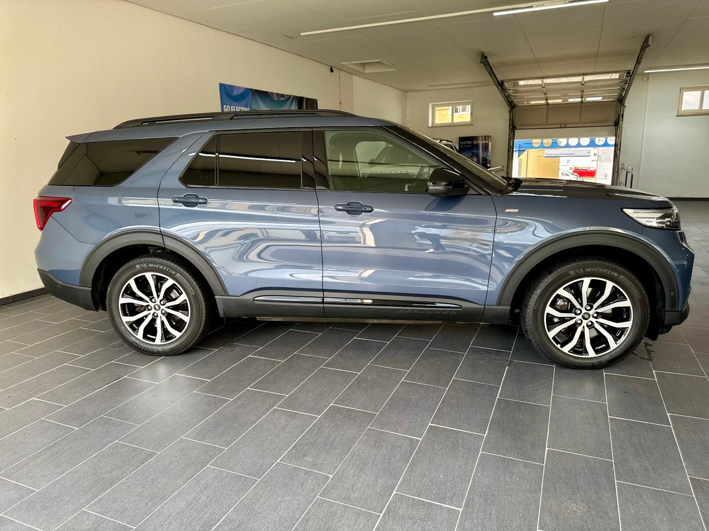

Ford Explorer 3.0 EcoBoost PHEV 4x4 ST-Line*AHK*PANO*
44980 PLN
Straubing
33.900 km
Ihre Angebots-Nr. für Anfragen: 16475-509
DEUTSCHE AUSFÜHRUNG!
BRUTTOLISTENPREIS: 77.000,- EUR
Bundesweite Anlieferung ab 399 Euro (inkl. Mwst.)
Sonderausstattung:
- Anhängerkupplung abnehmbar
- Infinite-Blau Metallic
Serienausstattung:
Technologie & Komfort:
- Aktiver Park-Assistent mit Ein- & Ausparkfunktion und teilautomatisierter Fahrzeugführung
- Ausweichassistent
- B&O-Soundsystem (980 Watt Leistung mit 14 Lautsprechern einschließlich Subwoofer)
- 360-Grad-Kamera mit „Split View“-Technologie
- 4 verschiedene EV-Modus
- Ford Easy Fuel
- Intelligente Geschwindigkeitsregelanlage adaptiv (iACC) mit Verkehrsschild-Erkennungssystem
- Stau-Assistent mit Stop&Go-Funktion
- Fahrspur-Pilot
- Ford Navigationssystem inkl. Ford SYNC3
- 10,1” Touchscreen-Display
- Digitaler Radioempfang DAB/DAB+
- Android Auto & Apple CarPlay
- Sprachsteuerung für Audio & Telefon
- Ladekalbel für die öffentliche Ladestation
- Müdigkeitswarner
- Park-Pilot-System vorn & hinten
- Post-Collision-Assist
- Pre-Collision-Assist inkl. Auffahrwarnsystem mit Fußgänger & Fahrraderkennung
- Selektiver Fahrmodus-Schalter mit 7 Fahrmodi zur Auswahl
- Sportlich abgestimmtes Fahrwerk
Ausstattung innen:
- Aktive Geräuschkompensation
- Amaturenträger mit Designelementen in Carbon-Optik
- Ambientebeleuchtung
- Einstiegszierleisten vorn mit „ST-Line“-Schriftzug
- Electronic Shifter (Drehschalter für Automatikgetriebe)
- Dachkonsole mit Brillenablagefach
- Digitale Instrumententafel 12,3“
- Fensterheber vorn & hinten elektrisch
- Gepäraumabdeckung
- Induktive Ladestation für mobile Endgeräte
- Innenspiegel automatisch abblendend
- Kartenleselampen vorn, sowie in der 2. & 3. Sitzreihe
- 3-Zonen-Klimaautomatik
- Kopfstützen vorn 4-fach einstellbar
- Ladkantenschutz
- Lederlenkrad beheizbar, im ST-Line-Design
- Lenksäule in Höhe & Reichweite elektrisch einstellbar
- Mittelkonsole vorn mit geplosterter Armauflage
- Premium-Polsterung in schwarz mit perforierter Sitzmittelbahn und roten Ziernähten
- Fahrersitz, Sportsitz, 10-fach elektrisch einstellbar, klimatisiert & beheizbar, mit Lendenwirbelstütze, Massagefunktion und Memoryfunktion
- Beifahrersitz, Sportsitz, 8-fach elektrisch einstellbar, klimatisiert & beheizbar, mit Lendenwirbelstütze, Massagefunktion und Memoryfunktion
- Rücksitze der 2. Sitzreihe beheizbar
- Sonnenblenden für die 2. Sitzreihe
- 2. Sitzreihe außen verschiebbar (Easy Entry)
- 3. Sitzreihe elektrisch aus- & einfahrbar
- Teppichfußmatten vorn & hinten mit roten Ziernähten
- Türeinsätze mit roten Ziernähten
- Verzurrösen im Gepäraum
- 12-Volt-Anschluss in der 1. Sitzreihe und im Gepäckraum
- 230-Volt-Anschluss in der 2. Sitzreihe
Ausstattung außen:
- Auspuffanlage mit vier Endrohren aus poliertem Edelstahl
- Außenspiegel in Kontrastfarbe schwarz
- Außenspiegele elektrisch einstellbar, beheizbar, mit integrierten Blinkleuchten, elektrisch anklappbar und mit Umfeldbeleuchtung sowie Memory-Funktion
- Dachreling schwarz
- Explorer Schriftzug an der Motorhaube und der Heckklappe
- Frontscheibe beheizbar
- Heckklappe elektrisch
- Heckklappe mit Applikationen in schwarz
- Heckspoiler in Wagenfarbe lackiert
- Kühlergrill in schwarz
- LED-Nebelscheinwerfer
- LED-Rückleuchten (schwarz abgesetzt)
- LED-Scheinwerfer mit Fernlicht-Assistent & automatischer Leuchtweitenregulierung
- LED-Tagfahrlicht
- Panorama-Schiebedach elektrisch mit „Solar-Reflect“-Wärmeschutz und elektrischer Sonnenblende
- Plug-In-Hybrid-AWD-Badge an der Heckklappe
- Reifendruckkontrollsystem
- Notrad
- Scheibenwischer mit Regensensor und Enteisungsfunktion
- Scheinwerfer-Assistent mit Tag/Nacht-Sensor
- Seitenscheiben ab 2. Sitzreihe und Heckscheibe dunkel getönt
- Seitenschweller in schwarz mit Kontrasteinsätzen in schwarz glänzend
- ST-Line-Badge an Kotflügeln
- Toter-Winkel-Assistent mit Cross Traffic Alert und Anhängererkennung
- Türgriffe in Wagenfarbe lackiert mit Applikationen in schwarz
- Variabler Kühlerlufteinlass
Sicherheit:
- Bergabfahrassistent
- Berganfahrassistent
- Diebstahlalarmanlage
- Fahrpur-Assistent inkl. Fahrspurhalte-Assistent
- Feststellbremse elektrisch mit Auto Hold-Funktion
- Ford Key Free-System (schlüsselfreies Ver-/Entriegeln)
- Ford Power-Starfunktion (schlüsselfreies Starten)
- Intelligentes Sicherheits-System (IPS)
- Isofix-Halterungen an den Außensitzen der 2. & 3. Sitzreihe
- Notbremslicht
- Rückfahr-Notbremsassistent
- Zentralverriegelung
Reifen:
- 20“-Leichtmetallräder im 5x2-Speichen-Design
- 255/50 R20 Sommerreifen
Ihren Gebrauchtwagen nehmen wir zu einem fairen Preis in Zahlung.
Wir geben auf jedes Fahrzeug 1 Jahr Händlergewährleistung. Auf Wunsch können wir Ihnen zusätzlich ein Dekra-Siegel ausstellen lassen.
RUFEN SIE UNS AN UND ERFRAGEN SIE IHREN INDIVIDUELLEN FINANZIERUNGSWUNSCH AUCH OHNE ANZAHLUNG. WIR BERATEN SIE GERNE.
Irrtümer und Zwischenverkauf vorbehalten.
Auf Wunsch können Sie bei uns folgende Zusatzleistungen bestellen:
Zulassungsservice incl. Wunschkennzeichen und grüner Plakette
Sicherheits-Paket bestehend aus Verbandskasten, Warndreieck, Warnweste
Inzahlungnahmen
Finanzierung
Service nach Plan
Überführungskennzeichnen
